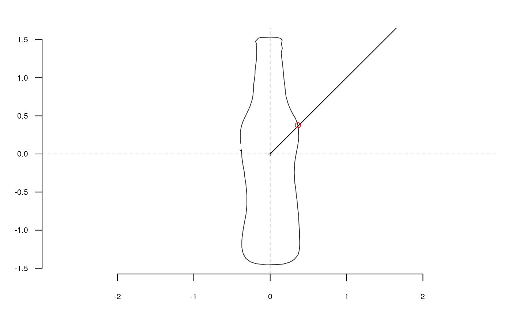

Take a shape, and an intersecting segment, which point is the nearest of where the segment intersects with the shape? Most of the time, centering before makes more sense.
coo_intersect_segment(coo, seg, center = TRUE)
| coo |
|
|---|---|
| seg | a 2x2 |
| center |
|
numeric the id of the nearest point, a list for Coo. See examples.
Other coo_ intersect: coo_intersect_angle
coo <- bot[1] %>% coo_center %>% coo_scale seg <- c(0, 0, 2, 2) # passed as a numeric of length(4) coo_plot(coo)segments(seg[1], seg[2], seg[3], seg[4])coo %>% coo_intersect_segment(seg) %T>% print %>% # prints on the console and draw it coo[., , drop=FALSE] %>% points(col="red")#> [1] 79# on Coo bot %>% slice(1:3) %>% # for the sake of speed coo_center %>% coo_intersect_segment(matrix(c(0, 0, 1000, 1000), ncol=2, byrow=TRUE))#> $brahma #> [1] 79 #> #> $caney #> [1] 96 #> #> $chimay #> [1] 110 #>